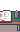
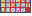
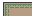
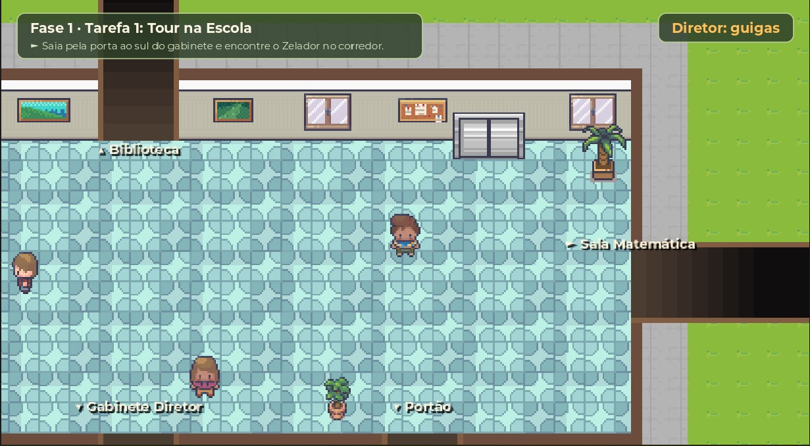

Explore a escola
Ande pelo corredor, pela biblioteca, pelo almoxarifado e pelo portão em visão de cima.

Fase 1 jogável · feito no IFSP
Você é o novo diretor da Escola Pitagorome. Organize a rotina, ouça os conflitos e resolva tudo com matemática.
Fase 1 · Tarefa 2
✓ Conflito no Horário
Diretor: você
Primeiro dia na diretoria
Como funciona
A matemática não vem em lista de exercícios. Ela aparece como problema real: um horário duplicado, um cadeado sem senha, uma excursão para organizar.
Ande pelo corredor, pela biblioteca, pelo almoxarifado e pelo portão em visão de cima.

A Coordenadora, o Zelador e o Professor de Matemática têm algo a dizer e, às vezes, uma pista.

Cada problema da escola vira um desafio: uma grade de horários, um cadeado, uma excursão.

Três fases, uma por trimestre, com 15 tarefas que ficam mais desafiadoras.
Direto do jogo



A Escola Pitagorome
O diretor nunca parou em um emprego. Aceitou o cargo pelo café grátis, e o antigo diretor havia desistido após três dias.
Todos os personagens →Das salas de aula ao refeitório, cada canto da escola esconde um problema. Escolha um conteúdo e veja onde ele aparece no jogo.
Diário de desenvolvimento
As últimas mudanças da equipe, direto do GitHub do Pitagorome.
Todas as novidades →O último desistiu depois de três dias. Será que você aguenta um trimestre inteiro?